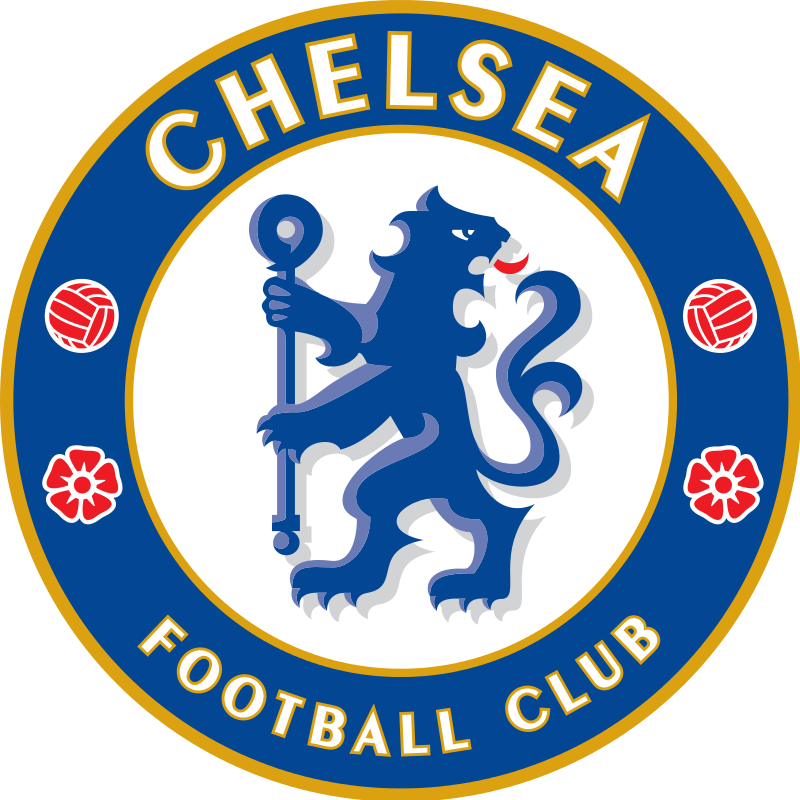

첼시 FC(영어: Chelsea Football Club, 첼시 축구단)은 잉글랜드 런던을 연고지로 하는 축구 클럽이다. 1905년에 창단했으며 현재 잉글리시 프리미어리그에 소속되어 있다. 더 블루스(The Blues)라는 별칭으로도 불린다. 구단 명칭은 런던 남서부 첼시 지역명을 사용 하지만, 홈 구장은 첼시 인근 풀럼에 위치한 41,663명을 입장시킬 수 있는 규모의 스탬퍼드 브릿지이다.
첼시는 프리미어리그 6회, FA컵 8회, 리그컵 5회, FA 커뮤니티 실드 4회, UEFA 컵위너 스컵 2회의 우승 경력이 있으며, UEFA 챔피언스리그, UEFA 유로파리그, UEFA 슈퍼컵에서 각각 1회의 우승을 기록하였다.[2] 또한 첼시는 UEFA 챔피언스리그에서 우승을 거둔 런던의 유일한 축구팀이며,[3] UEFA가 주관하는 3개의 주요 대회에서 모두 우승을 거둔 4개의 구단 중 하나이다.